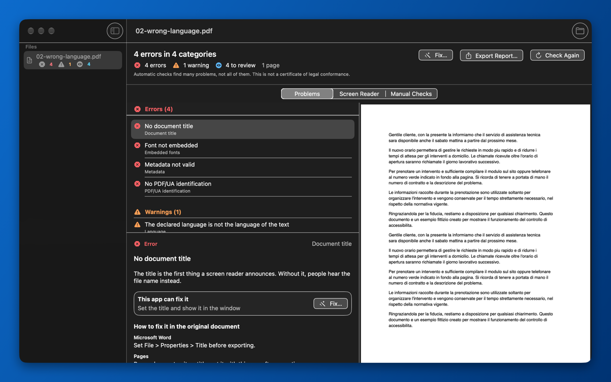
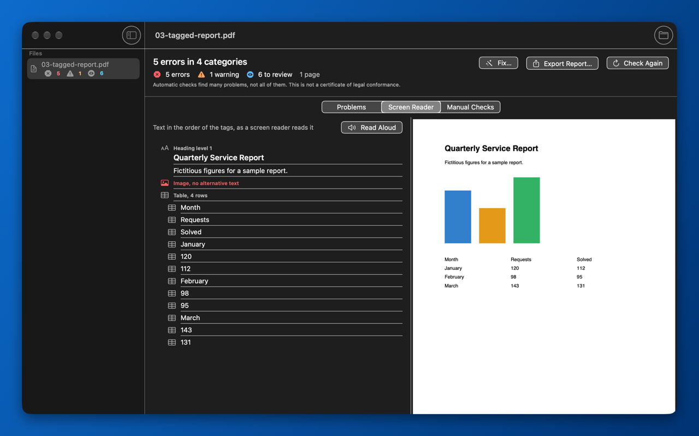
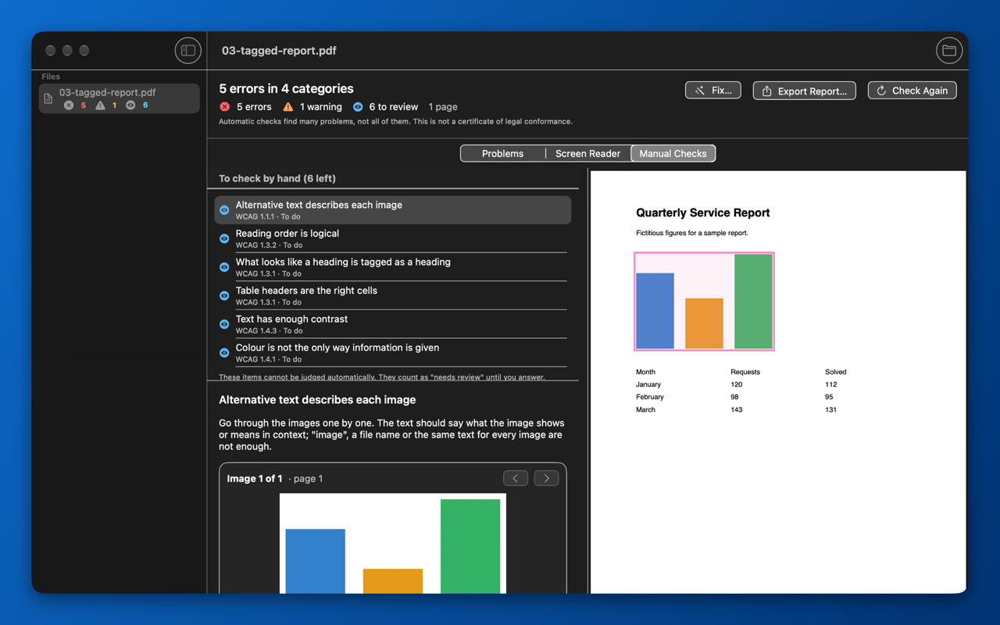

PDF Accessibility Checker for Mac
Find out whether a PDF can be read by people who use a screen reader, magnification or other assistive technology. The app checks the file on your Mac, explains every problem in plain language and tells you how to fix it in the program that created the document.
PDF Accessibility Checker on the Mac App Store
Placeholder: the App Store link (<app-id>) will be added at launch.

What the app checks
PDF Accessibility Checker reads the structure of the PDF – the tags that tell assistive technology what is a heading, a list, a table or an image – together with the metadata and the content of the pages. It looks for problems such as:
- no tags at all, or content that is not linked to the tags;
- missing document title, or a title that is not shown in the window;
- missing document language, or a declared language that does not match the text;
- images without alternative text;
- headings, lists and tables with a wrong structure;
- fonts that are not embedded or text that cannot be mapped to Unicode;
- links, form fields and annotations without a description;
- invalid XMP metadata and a missing PDF/UA identifier.
Three levels of results
- Error: a problem that stops some people from using the document.
- Warning: a problem that makes the document harder to use, or that is very likely wrong.
- Needs review: something that a program cannot judge on its own. When the app cannot be sure, it never reports a pass: it asks you to look.
Screen reader view
See the text in the order of the tags, the way a screen reader reads it: headings with their level, lists, tables, and the alternative text of images (or a clear notice when it is missing). The app can also read the text aloud.

Guided manual checks
Some things only a person can decide: whether the alternative text really describes the image, whether the reading order makes sense, whether the contrast is sufficient, whether color is the only way information is given. The Manual Checks view guides you through them one at a time and shows the images one by one, so you can compare each image with its description.

Free and Pro
| Feature | Free | Pro |
|---|---|---|
| Complete check of one file at a time, with all problems and explanations | Yes | Yes |
| Screen reader view and guided manual checks | Yes | Yes |
| Batch check of several files and whole folders, with a summary | No | Yes |
| Automatic fixes, saved as a new file | No | Yes |
| Report export as an accessible tagged PDF and as CSV | No | Yes |
| Finder Quick Action “Check Accessibility” | No | Yes |
Pro is a one-time in-app purchase of USD 49.99 (the App Store shows the price in your local currency). There is no subscription.
Automatic fixes in Pro
Fixes are always saved as a new file named name-accessible.pdf next to the original, never over it. The new file is then checked again, so you see what changed. The app can:
- set the document language, proposing it from the text with Apple’s NaturalLanguage framework;
- set the document title and make the window show it (DisplayDocTitle);
- repair invalid XMP metadata;
- remove the author and document metadata, overwriting the old values where the file allows it.
Problems in the structure itself – missing tags, images without alternative text, wrong reading order – have to be fixed in the source document or in a PDF editor. For each of them the app explains how to do it in Microsoft Word, Pages and Adobe InDesign.
Private by design
- Runs offline, entirely on your Mac.
- No account, no data collection, no analytics. Read the privacy policy.
- Requires macOS 14 or later.
- Available in English, Italian, German, French and Spanish.